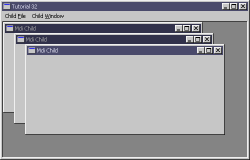

| Sulaiman Chang Personal Website |
|
Tutorial 32 : Multiple Document Interface (MDI)
format PE GUI 4.0
entry start
include '%fasminc%\win32a.inc'
MI_NEW = 40005
MI_CLOSE = 40006
MI_EXIT = 40001
MI_TILEHOR = 40002
MI_TILEVER = 40003
MI_CASCADE = 40004
section '.data' data readable writeable
insH dd ?
wndFH dd ?
wndCH dd ?
wndFTitle db 'Tutorial 32',0
wndMdiTitle db 'Mdi Child',0
wndFClsName db 'TUT_32',0
wndCClsName db 'MDICLIENT',0
wndMdiClsName db 'TUT_32_MDI',0
wndCCcs CLIENTCREATESTRUCT
wndMdiCs MDICREATESTRUCT
wndCls WNDCLASS
wndMsg MSG
wndFMenuH dd ?
wndMdiMenuH dd ?
msg1 db 'Are you sure you want to',13,10,'close this window ?',0
section '.code' code readable executable
start:
invoke GetModuleHandle,0
mov [insH],eax
mov [wndCls.hInstance],eax
mov [wndCls.style],CS_HREDRAW or CS_VREDRAW
mov [wndCls.lpfnWndProc],window_procedure
mov [wndCls.lpszClassName],wndFClsName
mov [wndCls.hbrBackground],COLOR_APPWORKSPACE
mov [wndCls.lpszMenuName],30
invoke LoadIcon,NULL,IDI_APPLICATION
mov [wndCls.hIcon],eax
invoke LoadCursor,NULL,IDC_ARROW
mov [wndCls.hCursor],eax
invoke RegisterClass,wndCls
mov [wndCls.lpszMenuName],NULL
mov [wndCls.lpfnWndProc],window_child_procedure
mov [wndCls.lpszClassName],wndMdiClsName
invoke RegisterClass,wndCls
invoke CreateWindowEx,WS_EX_CLIENTEDGE,wndFClsName,wndFTitle,\
WS_OVERLAPPEDWINDOW + WS_CLIPCHILDREN + WS_VISIBLE,\
CW_USEDEFAULT,CW_USEDEFAULT,500,320,\
NULL,NULL,[insH],NULL
mov [wndFH],eax
invoke LoadMenu,[insH],31
mov [wndMdiMenuH],eax
;+---------------------------+
;| entering the message loop |
;+---------------------------+
window_message_loop_start:
invoke GetMessage,wndMsg,NULL,0,0
or eax,eax
je window_message_loop_end
invoke TranslateMDISysAccel,[wndCH],wndMsg
or eax,eax
jne window_message_loop_start
invoke TranslateMessage,wndMsg
invoke DispatchMessage,wndMsg
jmp window_message_loop_start
window_message_loop_end:
invoke DestroyMenu,[wndMdiMenuH]
invoke ExitProcess,0
;+----------------------+
;| the window procedure |
;+----------------------+
proc window_procedure,hWnd,uMsg,wParam,lParam
push ebx esi edi
cmp [uMsg],WM_COMMAND
je wmCOMMAND
cmp [uMsg],WM_CREATE
je wmCREATE
cmp [uMsg],WM_DESTROY
je wmDESTROY
wmDEFAULT:
invoke DefFrameProc,[hWnd],[wndCH],[uMsg],[wParam],[lParam]
jmp wmBYE
wmCREATE:
invoke GetMenu,[hWnd]
mov [wndFMenuH],eax
invoke GetSubMenu,eax,1
mov [wndCCcs.hWindowMenu],eax
mov [wndCCcs.idFirstChild],100
invoke CreateWindowEx,NULL,wndCClsName,NULL,\
WS_CHILD + WS_CLIPCHILDREN + WS_VISIBLE,\
CW_USEDEFAULT,CW_USEDEFAULT,CW_USEDEFAULT,CW_USEDEFAULT,\
[hWnd],NULL,[insH],wndCCcs
mov [wndCH],eax
mov [wndMdiCs.szClass],wndMdiClsName
mov [wndMdiCs.szTitle],wndMdiTitle
push [insH]
pop [wndMdiCs.hOwner]
mov [wndMdiCs.x],CW_USEDEFAULT
mov [wndMdiCs.y],CW_USEDEFAULT
mov [wndMdiCs.cx],CW_USEDEFAULT
mov [wndMdiCs.cy],CW_USEDEFAULT
jmp wmBYE
wmCOMMAND:
cmp [wParam],0xFFFF and MI_EXIT
je wmCOMMAND_MI_EXIT
cmp [wParam],0xFFFF and MI_NEW
je wmCOMMAND_MI_NEW
cmp [wParam],0xFFFF and MI_TILEHOR
je wmCOMMAND_MI_TILEHOR
cmp [wParam],0xFFFF and MI_TILEVER
je wmCOMMAND_MI_TILEVER
cmp [wParam],0xFFFF and MI_CASCADE
je wmCOMMAND_MI_CASCADE
cmp [wParam],0xFFFF and MI_CLOSE
je wmCOMMAND_MI_CLOSE
jmp wmDEFAULT
wmCOMMAND_MI_NEW:
invoke SendMessage,[wndCH],WM_MDICREATE,0,wndMdiCs
jmp wmBYE
wmCOMMAND_MI_EXIT:
invoke SendMessage,[wndFH],WM_CLOSE,0,0
jmp wmBYE
wmCOMMAND_MI_TILEHOR:
invoke SendMessage,[wndCH],WM_MDITILE,MDITILE_HORIZONTAL,0
jmp wmBYE
wmCOMMAND_MI_TILEVER:
invoke SendMessage,[wndCH],WM_MDITILE,MDITILE_VERTICAL,0
jmp wmBYE
wmCOMMAND_MI_CASCADE:
invoke SendMessage,[wndCH],WM_MDICASCADE,MDITILE_SKIPDISABLED,0
jmp wmBYE
wmCOMMAND_MI_CLOSE:
invoke SendMessage,[wndCH],WM_MDIGETACTIVE,0,0
invoke SendMessage,eax,WM_CLOSE,0,0
jmp wmBYE
wmDESTROY:
invoke PostQuitMessage,0
wmBYE:
pop edi esi ebx
return
endp
proc window_child_procedure,hWnd,uMsg,wParam,lParam
cmp [uMsg],WM_MDIACTIVATE
je wcmMDIACTIVATE
cmp [uMsg],WM_CLOSE
je wcmCLOSE
wcmDEFAULT:
invoke DefMDIChildProc,[hWnd],[uMsg],[wParam],[lParam]
return
wcmMDIACTIVATE:
mov eax,[lParam]
cmp eax,[hWnd]
jne @f
invoke GetSubMenu,[wndMdiMenuH],1
invoke SendMessage,[wndCH],WM_MDISETMENU,[wndMdiMenuH],eax
jmp wcmMDIACTIVATE_EXIT
@@:
invoke GetSubMenu,[wndFMenuH],1
invoke SendMessage,[wndCH],WM_MDISETMENU,[wndFMenuH],eax
wcmMDIACTIVATE_EXIT:
invoke DrawMenuBar,[wndFH]
jmp wcmBYE
wcmCLOSE:
invoke MessageBox,[wndCH],msg1,wndFTitle,MB_YESNO
cmp eax,IDYES
jne wcmBYE
invoke SendMessage,[wndCH],WM_MDIDESTROY,[hWnd],0
wcmBYE:
return
endp
section '.idata' import data readable
library KERNEL32, 'KERNEL32.DLL',\
USER32, 'USER32.DLL'
import KERNEL32,\
GetModuleHandle, 'GetModuleHandleA',\
ExitProcess, 'ExitProcess'
import USER32,\
RegisterClass, 'RegisterClassA',\
CreateWindowEx, 'CreateWindowExA',\
DefWindowProc, 'DefWindowProcA',\
LoadCursor, 'LoadCursorA',\
LoadIcon, 'LoadIconA',\
LoadMenu, 'LoadMenuA',\
DestroyMenu, 'DestroyMenu',\
GetMenu, 'GetMenu',\
GetSubMenu, 'GetSubMenu',\
DrawMenuBar, 'DrawMenuBar',\
SendMessage, 'SendMessageA',\
GetMessage, 'GetMessageA',\
MessageBox, 'MessageBoxA',\
DestroyWindow, 'DestroyWindow',\
DefFrameProc, 'DefFrameProcA',\
DefMDIChildProc, 'DefMDIChildProcA',\
TranslateMessage, 'TranslateMessage',\
TranslateMDISysAccel, 'TranslateMDISysAccel',\
DispatchMessage, 'DispatchMessageA',\
PostQuitMessage, 'PostQuitMessage'
section '.rsrc' resource from 'tut_32.rc.RES'
tut_32.rc
#define LANG_NEUTRAL 0x00
#define SUBLANG_NEUTRAL 0x00
#define MFT_SEPARATOR 0x800
#define MI_NEW 40005
#define MI_CLOSE 40006
#define MI_EXIT 40001
#define MI_TILEHOR 40002
#define MI_TILEVER 40003
#define MI_CASCADE 40004
30 MENUEX
LANGUAGE LANG_NEUTRAL, SUBLANG_NEUTRAL
{
POPUP "&File"
{
MENUITEM "&New", MI_NEW
MENUITEM "",0,MFT_SEPARATOR
MENUITEM "&Exit", MI_EXIT
}
POPUP "&Window"
{
MENUITEM "Tile Horizontal", MI_TILEHOR
MENUITEM "Tile Vertical", MI_TILEVER
MENUITEM "Cascade", MI_CASCADE
}
}
31 MENUEX
LANGUAGE LANG_NEUTRAL, SUBLANG_NEUTRAL
{
POPUP "&File"
{
MENUITEM "&New", MI_NEW
MENUITEM "&Close", MI_CLOSE
MENUITEM "",0,MFT_SEPARATOR
MENUITEM "&Exit", MI_EXIT
}
POPUP "&Window"
{
MENUITEM "Tile Horizontal", MI_TILEHOR
MENUITEM "Tile Vertical", MI_TILEVER
MENUITEM "Cascade", MI_CASCADE
}
}
Result : |
| Copyright © 2004 Sulaiman Chang. All Rights Reserved. |